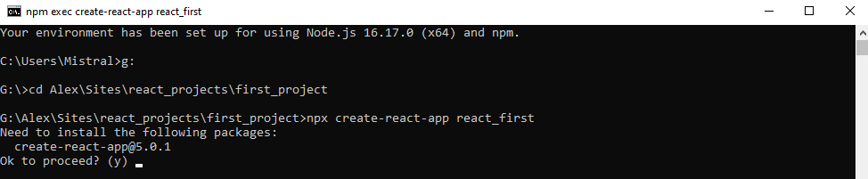

1-ый урок React
В первую очередь нужно установить NodeJS (а как иначе) Скачивайте только с официального сайта nodejs.org . В пути не должно быть русских символов. Лучше сделать, чем не сделать. АУФ. (в релизе "ауф" не будет) В процессе установки ничего менять не нужно - соглашаемся со всем. Процесс настройки очень геморный, но есть гении из facebook (на всякий случай осуждаю), которые сделали create-react-app. Вам не обязательно знать как это всё работает, но это работает. Всему свое время.
Стоит уточнить, что все программки лежат на GitHub, да и вообще всем нужен аккаунт GitHub.
Первое, что нужно сделать для создания нашего одностраничного приложения, так это открыть Node.js command prompt
и выбрать папку, в которой будут храниться проекты. Помните, что "В пути не должно быть русских символов". Чтобы
сменить диск в консоли пропишите букву диска и двоеточие. Отлично, вы перешли на нужный диск. Пропишите cd Ваш
путь к папке. К примеру, мне пришлось прописать: cd Alex\Sites\react_projects\first_project . Находять в точке
назначения, прописываем команду, которую придумали те гении из facebook'а (на всякий случай осуждаю), а именно
npx create-react-app название_приложения . Вас могут спросить разрешение на установку, соглашаемся и отходим
пить чай. Это займёт некоторое время.
Итак. Вот загрузка завершилась и вы уже можете зайти внутрь. Для
этого заходим через консоль в папку проекта (Если этого не сделать, ошибка вылетит) и пишем npm start .
Вы подняли локальный сервер.
- create-react-app Создает основу для будущего действа
- Важно иметь аккаунт GitHub, т.к. вам точно придется туда лезть